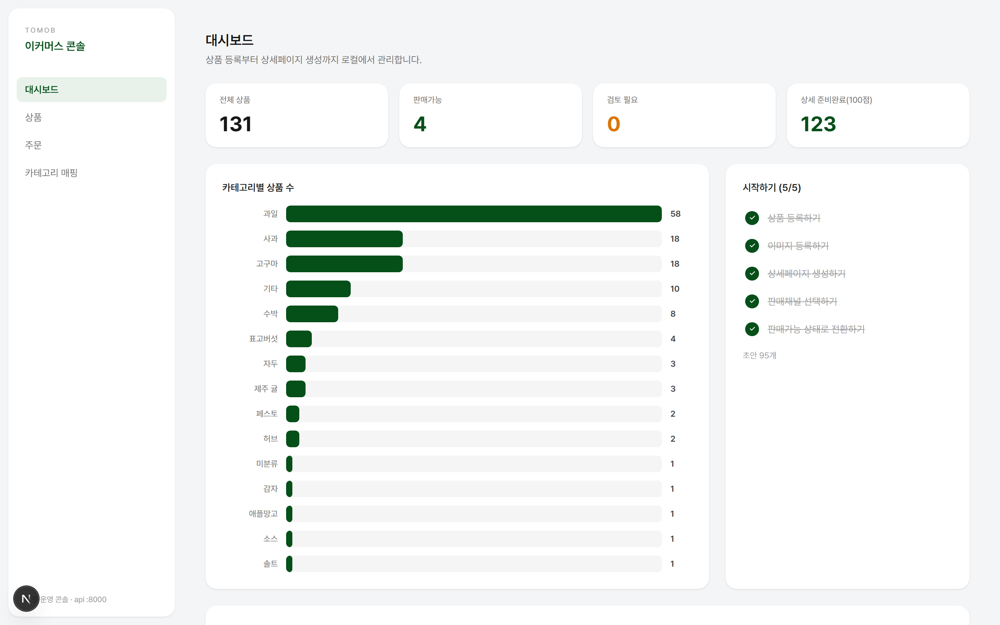
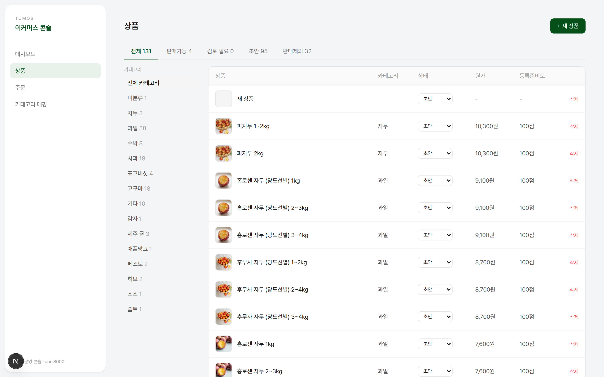
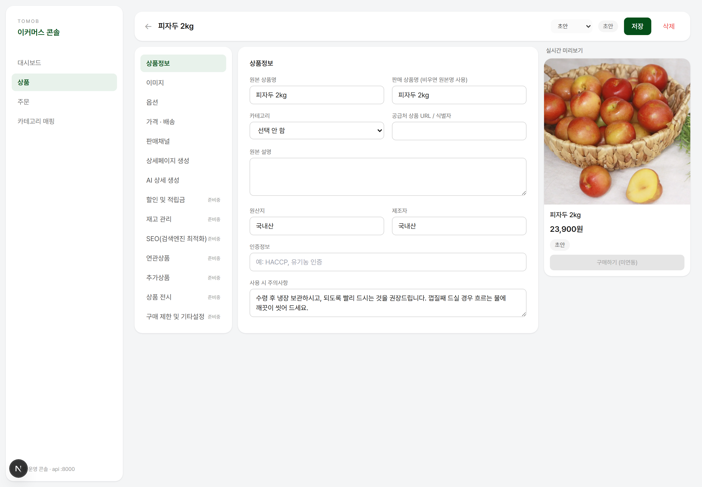
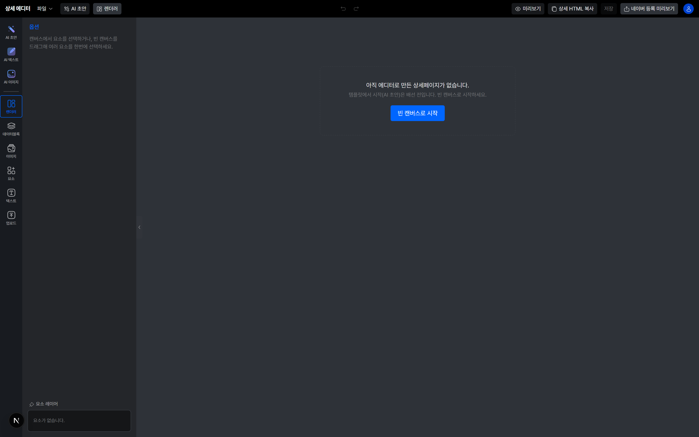
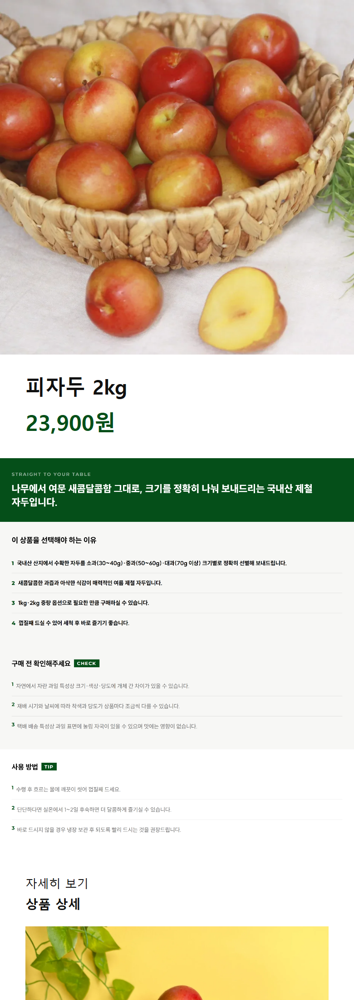
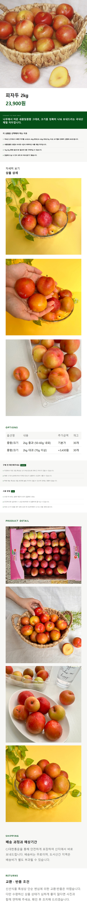

공급처 상품을 번역·재구성하고, 상세페이지를 자동으로 조립·편집해 네이버까지 올리는 1인 이커머스 운영 ERP.
01 The Bottleneck
상품 하나 올리는 시간의 대부분이 상세페이지였어요.
Lime은 산지직송·구매대행 상품을 네이버 스마트스토어에 올려 운영하면서 직접 만든 도구예요. 상품을 고르는 건 금방인데, 외국어 공급처 자료를 번역하고 매번 똑같은 구조를 손으로 다시 짜는 일에서 항상 막혔어요.
구조가 매번 같다면 그건 사람이 할 일이 아니라고 봤어요. 그래서 데이터를 한 번 넣으면 상세가 조립되고, 손볼 데만 직접 고쳐 네이버로 넘기는 흐름을 만들었어요.

02 The Rule
제일 쉬워 보이는 길이 제일 위험했어요.
상세 한 장을 통째로 AI 이미지로 뽑으면 십 분이면 끝나요. 그런데 식품 상세엔 원산지·중량·인증처럼 틀리면 법적 문제가 되는 값이 들어가요.
무엇을 코드로 남기고 무엇을 AI에 맡길지 — 이 경계를 규칙으로 먼저 정하고 나서야 나머지 기능을 만들 수 있었어요.
빠르지만 한글이 깨지고, 수정이 불가능하고, 원산지·인증 같은 정보를 AI가 임의로 지어낼 위험이 있어요. 식품 상세에선 표시광고법 리스크예요.
텍스트·데이터는 코드/HTML로 합성하고, AI는 카피·구조 제안과 대표컷 생성까지만. 원산지·인증·수량은 AI가 절대 생성하지 않아요.
03 Inventory
'어떤 상품부터 손봐야 하지'를 점수로 바꿨어요.
상품이 백 개를 넘어가면 뭐가 덜 됐는지를 기억으로 관리할 수 없어요. 그래서 초안 → 검토 → 판매가능 상태와 별개로, 상품마다 상세 등록준비도를 100점으로 점수화했어요.
이미지가 없으면 몇 점, 원산지가 비면 몇 점씩 깎이는 식이에요. 점수가 낮은 순으로 정렬하면 오늘 할 일이 그대로 나와요.

04 Binding
앞에서 정한 규칙을 실제로 지키는 방식이에요.
원산지·중량·가격을 문장이 아니라 필드로 입력하면 그 값이 상세 블록에 그대로 연결돼요. 이미지로 구워버리지 않으니까 값이 바뀌면 값만 고치면 돼요.
공급가가 오르면 상세를 다시 만드는 게 아니라 숫자 하나만 바꿔요. 상품 수가 늘어날수록 이 차이가 커졌어요.

05 The Canvas
"조금만 더 왼쪽"을 설명하느니 직접 끄는 게 빨라요.
AI 초안이 80%쯤 맞을 때가 제일 곤란했어요. 나머지 20%를 채팅으로 고치려면 왕복이 몇 번씩 생기는데, 마우스로 끌면 3초예요.
그래서 피그마식 캔버스 에디터를 붙였어요. 텍스트·이미지·도형·데이터블록을 직접 배치하고, 다 되면 네이버 등록 화면 그대로 미리 보고 상세 HTML을 복사해요.

06 Handoff
마지막 한 걸음에서 깨지는 걸 막는 게 일이었어요.
네이버 에디터는 외부 CSS를 받지 않아요. 그래서 조립된 상세를 CSS 인라인화하고 이미지를 CDN 주소로 치환한 다음에야 붙여넣기가 깨지지 않았어요.
아래는 실제로 이 시스템이 만들어 올린 상세페이지예요.


실제 생성·조립된 상세페이지 (피자두 2kg)
07 In Operation
만들고 끝난 게 아니라, 매일 쓰면서 고치고 있어요.
Lime은 보여주려고 만든 게 아니라 실제로 스토어를 굴리려고 만들었어요. 지금 131개 상품이 이 시스템으로 등록돼 있고, 그중 123개는 상세까지 준비를 마쳤어요.
쓰는 사람이 저라서 불편한 지점이 바로 보여요. 기능이 늘어난 건 대부분 제가 그날 짜증 났던 것에서 시작됐어요.